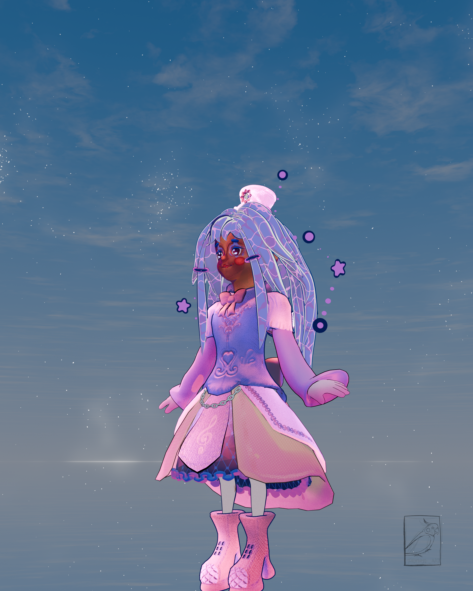
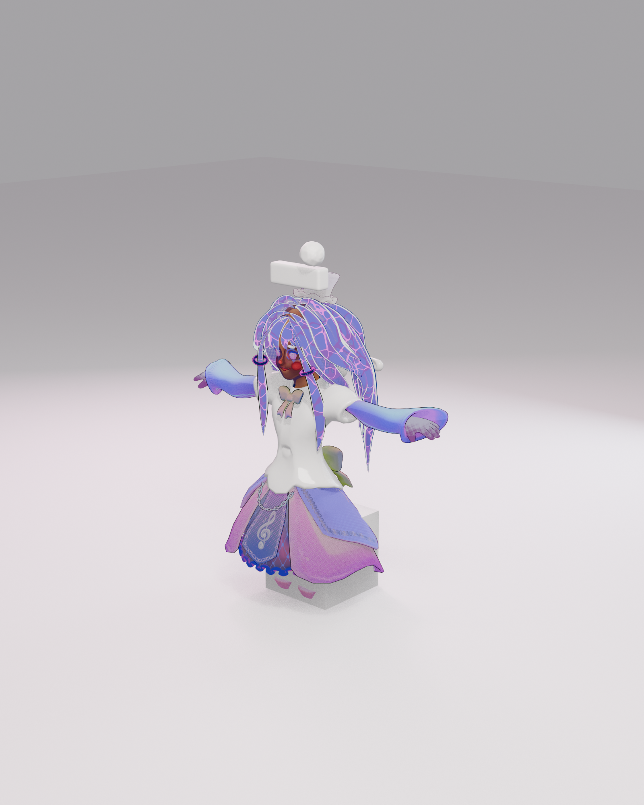
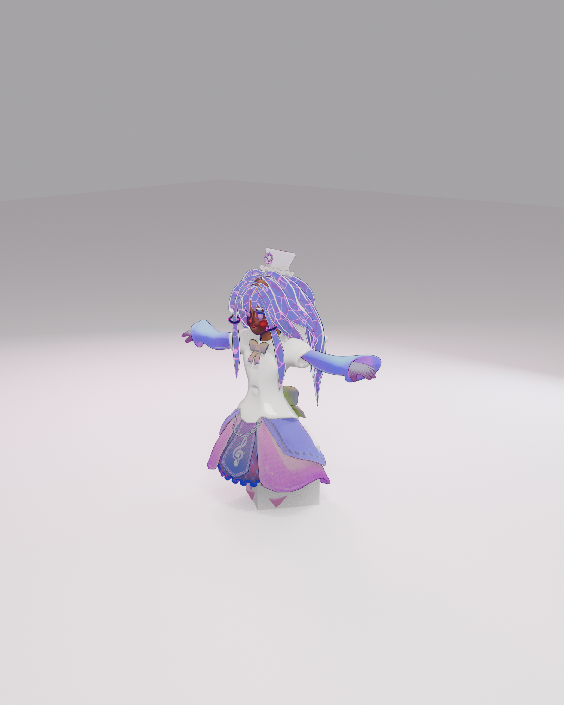

First failed Songcraft cue
The bedroom's emotional beat — Melusina attempts Songcraft, it fails, Sir Melodious is absent. Seeds Dissonance and drives the player toward KaleidoNave's prologue memory.
Level Passport — L_MelusinaMorning
Travel allowlist verified: L_MelusinaMorning added to DA_MelodiaIntegrationConfig. QuillScript UI confirmed in PIE. Melusina material slots all assigned. Water VFX live.
Melusina — Character Art
Melusina was modelled in Blender 5.1 and rigged for UE5. Her material stack lives on M_Master_Toon_Universal — warm-violet toon ramp, water hair shader, Niagara water splash emitters, glam audio-visual sheen. Every render below is EEVEE or Blender Cycles — the hybrid pipeline (Blender beauty + UE Substrate Toon) is the point.





Songcraft + Dialogue
The bedroom holds: the bed (save sanctuary), the empty companion perch (Sir Melodious is absent), and the Songcraft instrument area where Melusina's first attempt at a Songcraft cue fails — seeding the emotional arc of the vertical slice. QuillScript dialogue renders and choice entries both confirmed in PIE.
The bedroom's emotional beat — Melusina attempts Songcraft, it fails, Sir Melodious is absent. Seeds Dissonance and drives the player toward KaleidoNave's prologue memory.
Bed is the save/rest anchor. ConsumedRewardIds SaveGame-flagged. Slot unified to MelodiaJRPGSlot0. Save create/load chain verified ✅ — gate: save_system ✅.
Sir Melodious's companion perch sits empty. His absence is the environmental storytelling. Skills keyed off Melusina's Resonance marks — he is the answering voice, not a second attacker.
Material Pipeline
Melusina's character pipeline is hybrid: modelled and rendered in Blender 5.1 (EEVEE, Cycles), then brought into UE 5.8 on M_Master_Toon_Universal. This is the same art direction that Infinity Nikki uses: stylized primary shading + secondary glam layer + dynamic emission.
Both set True for gloves material slot. frontpanel textures patched. gate: material_switches ✅ 2026-08-07.
Tuned down from 0.15/0.08 — prevents blooming in interior lighting. WaterOpacity 0.60 (from 0.72). MPC GlobalEmissiveBoost=1.0. gate: hair_emissive ✅
SprintSpeedMultiplier 1.5→1.7, sprint speed 714 uu/s. IsJumpWindingUp() OR'd into bRuntimeIsInAir via MelodiaLocomotionAnimInstance.cpp C++ data bridge. gates: sprint_speed ✅ jump_windup ✅